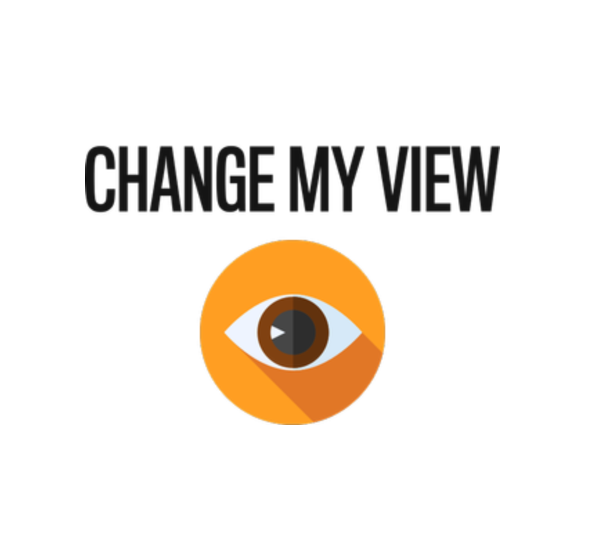
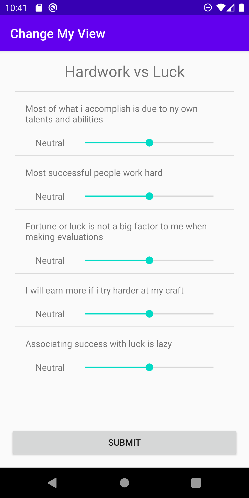
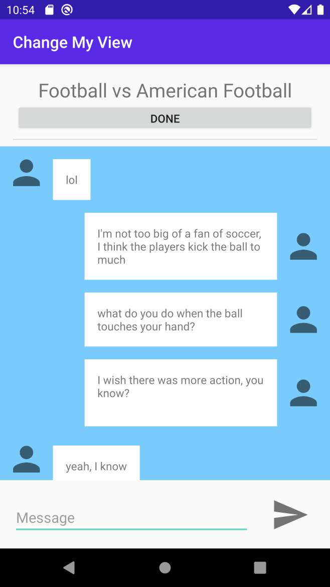

|  | Change My View App |
| External link to .apk | |
| External link to source zip | |
| This is a debating style chat application, that allows users to sign up and participate in a variety of debate topic. Users will have the chance to particpate in a debate as an observer or a debater. All users will answer a set questions before and after to the debate to determine which side of the topic they lean on, and if theyre perspective on the top was changed. | |
|  |  |
| External link to YouTube video | |
| Groupie | |